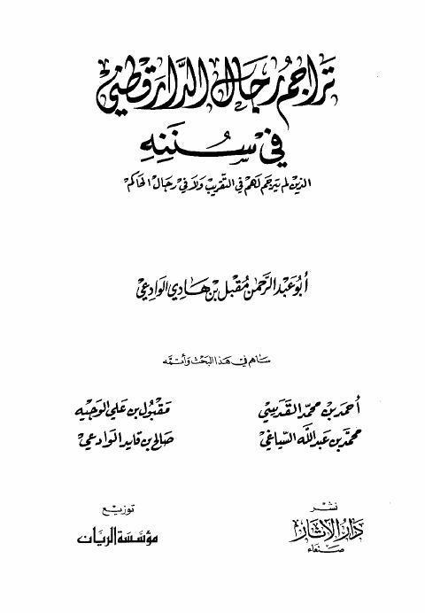
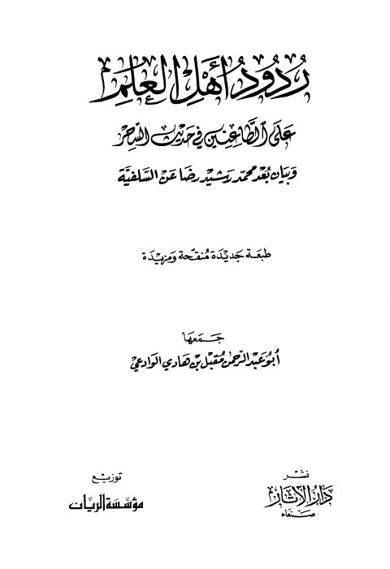

مقبل بن هادي الوادعي
Author
· d. 1422 AH
Resources

تراجم رجال الدار قطني في سننه الذين لم يترجم لهم في التقريب ولا في رجال الحاكم تراجم رجال الدار قطني في سننه الذين لم يترجم لهم في التقريب ولا في رجال الحاكم مقبل بن هادي الوادعي
ردود أهل العلم على الطاعنين في حديث السحر ردود أهل العلم على الطاعنين في حديث السحر مقبل بن هادي الوادعي الشفاعة
الشفاعة
مقبل بن هادي الوادعي
الشفاعة
الشفاعة
مقبل بن هادي الوادعي